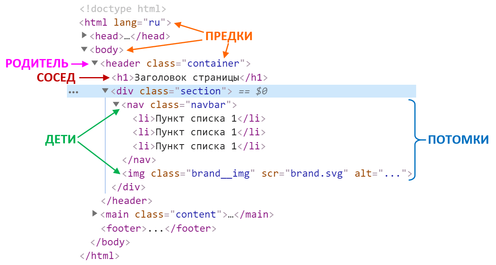

1.Введення в CSS
Нагадаємо, що CSS розшифровується як «каскадні таблиці стилів». Ця мова відповідає за зовнішній вигляд HTML-сторінки. Синтаксис мови досить простий: він складається з селекторів і властивостей. За допомогою селекторів можна сказати браузеру які саме елементи ми хочемо оформити. Властивості описують як саме ми хочемо оформити ці елементи.
В лекції Структура HTML-документа були описані різні способи підключення стилів (через тег style, через атрибут style=”…” або через зовнішній файл link href = "style.css" rel = "stylesheet").
Найпростіші селектори - це селектори з іменами тегів. За їх допомогою можна задати стилі для всіх абзаців на сторінці, для всіх посилань, заголовків першого рівня і так далі. Такі селектори містять ім'я тега без символів < і >.
Властивості для оформлення тексту
В CSS існує величезна кількість властивостей. Їх можна розбити на наступні групи:
- оформлення тексту;
- робота з розмірами і відступами;
- позиціонування елементів;
- створення сіток;
- декоративні: кольори, фон, тіні;
- інші.
Властивості для завдання розмірів і відступів
З допомогою CSS можна задавати ширину, висоту, зовнішні та внутрішні відступи елементів, мінімальну і максимальну ширину і висоту і так далі. Всі властивості, які так чи інакше впливають на розміри і відступи елементів, описуються в в так званій «Блочній моделі документа». Крім властивостей для відступів і розмірів в блокову модель входять властивості для опису меж, та дуже важлива властивість display , що визначає тип елемента (блочний, рядковий чи інший).
Позиціонування елементів
За допомогою позиціонування можна дуже точно і гнучко управляти розташуванням елементів. Позиціонування застосовують для створення складних «багатошарових» інтерфейсів, таких як спливаючі вікна чи галереї, а також для верстки дрібних декоративних елементів.
Головною властивістю для роботи з позиціонуванням є position, що перемикає режими позиціювання елемента. Ще чотири властивості: top, right, bottom, left, управляють розташуванням елемента. І остання властивість z-index управляє порядком шарів (аналогічно до шарів у Photoshop).
Створення сітки сторінки
Типовий веб-сайт складається з шапки (хедер), головного меню, блоку з основним змістом, бічних колонок та підвалу (футер). Ці блоки можуть бути розташовані один під одним, в декілька стовців, або ще складніше. Таке взаємне розташування основних блоків сайту і називають «сіткою» або «розкладкою».
Сітка може бути фіксованою або тягнутися – коли ширина блоків змінюється, в залежності від ширини вікна браузера. Щоб швидко й легко створювати сітки, потрібно добре розбиратися в блокової моделі і позиціонуванні.
Декоративні властивості
Щоб зробити сторінку яскравою і красивою можна використовувати безліч властивостей: колір тексту, фон, тіні, рамки, закруглення й багато інших.
Каскадність
Нагадаємо, що CSS розшифровується як «каскадні таблиці стилів». Чому саме каскадні? Вся справа в тому, що стилі для елемента можуть бути визначені в декількох місцях. Браузер знаходить всі CSS-правила, що зачіпають даний елемент, а потім комбінує їх і отримує підсумковий список властивостей для цього елемента. Комбінування властивостей проводиться за чіткими правилам, які спираються на пріоритетність і специфічність. Назва «каскадні» з'явилась через описаний механізм комбінування стилів з різних CSS-правил для конкретного елемента (абзацу(ів), заголовку(ів) і т.д.).
Коли для одного і того ж елемента є кілька CSS-правил з однаковими властивостями, браузер використовує поняття пріоритетів і специфічності, щоб вибрати значення властивості з декількох можливих.
- CSS-правила в атрибуті style найбільш пріоритетні,
- за ними йде селектор з id,
- потім селектор з класом,
- потім селектор з ім'ям тега.
Наслідування
Інший важливий механізм CSS - це спадкування. Суть його полягає в тому, що частина стилів може передаватися від батьківського елемента до дочірнього (вкладеного в нього). Наприклад, всі елементи всередині тега body є дочірніми по відношенню до нього. Якщо для в стилях задати колір тексту червоним, то колір всіх інших елементів теж стbodyане червоним. Ще приклад: тег ul є батьківським по відношенню до вкладених в нього тегів li. Якщо задати для ul шрифт курсивом, то і всередині всіх li шрифт стане курсивним.
Ненаслідувані властивості
Наслідування працює не для всіх властивостей. Деякі властивості застосовуються тільки до самого елемента і НЕ переходять до його нащадків. До таких ненаслідуваних властивостей відносяться: ширина, висота, відступи, режим позиціонування та інші.
2.Селектори
Селектори дозволяють дуже точно вказувати до яких елементів застосовувати CSS-властивості. Селектори - це наш «снайперський приціл», ми будемо вчитися ним користуватися. Але для початку уявимо, що механізму селекторів не існує. Як в цьому випадку задавати CSS-властивості елементам? За допомогою атрибуту style. Наприклад: p style = "color: red;"> ... / p
Селектори за класами
Клас - це один з атрибутів тега. Виглядає він ось так: li class = "first"> /li. Цей атрибут особливий, так як в CSS існує можливість вибирати елементи по класу. Робиться це за допомогою такого селектора: .ім'я_класу.
Імена класів можуть складатися з латинських символів, цифр, знаків, символів - і _. Ім'я класу має починатися з латинської літери.
Дочірні селектори
Нащадком називаються будь-які елементи розташовані всередині батьківського елементу. А дочірніми елементами називаються найближчі нащадки (причому їх може бути декілька – вкладених в батьківський елемент, але не один в одного). Дочірнім називається елемент, який безпосередньо розташовується усередині батьківського елементу. Який елемент виступає батьком, а який його нащадком легко з'ясувати за допомогою дерева елементів - так називається структура відносин тегів документа між собою:
Мультикласи
У CSS є запис, яка фактично виконує операцію логічного множення ("І"). Селектори, застосовувані до одного елементу, в цьому випадку пишуться без пробілів. Наприклад:
.class1.class2 {}
Стилі будуть застосовуватися до всіх елементів, які одночасно мають клас .class1 і .class2. Наприклад в коді HTML використовується конструкція:
р class = "class1 class2>.
Селектор по id
Існує ще один HTML-атрибут, для якого існує спеціальний селектор. Цей атрибут id (ідентифікатор), а селектор записується за допомогою символу #, наприклад: #some-id.
На значення id поширюються ті ж обмеження, що і на ім'я класу. Також id повинен бути унікальним на кожній сторінці. Використання селектору по id при оформленні вважається поганою практикою.
Існують рідкісні винятки з цього правила, наприклад, при створені деяких динамічних ефектів за допомогою CSS.